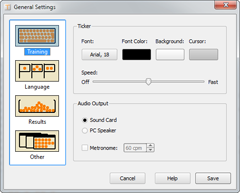
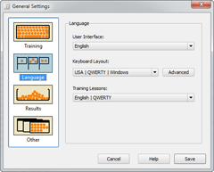
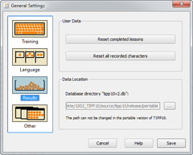
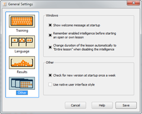

Results | Table of Contents | ABC Game
Results | Table of Contents | ABC Game 
7. General Settings
General settings are accessed in the menu bar of the home window. In Windows and Linux click on File and then the sub item General Settings. In the Mac OS click on TIPP10 and then Settings.
General settings are divided into four areas: Training, Language, Results and Other.
7.1 Training
Here you can make changes that will affect how your training is conducted.

7.1.1 Ticker
You can adjust the ticker's font, size and color to suit your taste. Just click on the appropriate button and select the font or color you want. Keep in mind that a font size larger than 20 is not recommended because the letters will not fit in the ticker properly.
You can set the ticker speed with the speed control. There are a total of five speed levels. The middle level is the default. If you move the control all the way to the left the ticker will be turned off and moving it all the way to the right will make the ticker move very fast.
Some users are annoyed by the ticker after using the program for a while. In this case we recommend selecting another color or turning the ticker off by moving the control all the way to the left.
7.1.2 Sounds
You can choose whether acoustic signals (for typing errors and metronome) are sent through the sound card or the internal PC speaker. If the sound card is used the audio files error.wav and metronome.wav will be played from the program directory. The PC speaker is only capable of producing a beep sound.
When the metronome is activated a ticking sound will be played in a pre-determined rhythm. This can assist you to type in a steady and constant speed. You can adjust the speed in strokes per minute i.e., 60 strokes per minute means the metronome will tick exactly once per second.
7.2 Language
Here you can set the language for the User Interface, the Training Lessons and the Keyboard Layout.

7.2.1 User Interface
TIPP10 currently offers a user interface in German and English. You can change the language in the drop-down menu.
Keep in mind that this setting only changes the language you use to navigate through the program and not the language of the lessons themselves which you can change further below.
For changes made to the user interface to take effect you must restart the software. You will be notified of this after you have saved the general settings.
7.2.2 Keyboard Layout
TIPP10 supports the American and the German keyboard layouts as well as the Swiss layout and the alternative keyboard layouts NEO, Dvorak and RISTOME. You can select the right keyboard for your computer in the drop down menu.
Some information you may need to know about the various keyboard layouts:
1. The USA | QWERTY keyboard layout is the standard US American keyboard layout.
2. The Windows layout differs slightly from the Apple layout (Windows and Apple/CMD keys, @ sign etc). Select the appropriate setting Windows or Macintosh.
3. When selecting the Schweiz | QWERTZ keyboard layout you can also select between the German-Swiss (SG) or the French-Swiss (SF) keyboard. In addition, all capitalized umlauts and the ß character will be written out (ß -> ss, Ä -> Ae, Ü -> Ue, etc.)!
4. If you have selected the USA | QWERTY keyboard the dictation will automatically convert all umlauts and ß (ß -> ss, Ä -> Ae, ü -> ue, etc.)!
5. Alternative systems such as the Dvorak keyboard layout developed by the American August Dvorak in 1936, the award-winning RISTOME layout created in 2005 or the NEO keyboard layout increase typing speed and reduce stress on the wrists. They have only found a small group of followers due to the widespread use of the QWERTY/Z system and the enormous efforts is would take to implement a new system. You can find information on the alternative keyboard layouts online. The distinction between Windows and Macintosh is eliminated in the alternative layouts since they are usually based on converted Windows keyboards where there is no difference in the keyboard layout.
6. If you want to make further adjustments to the characters available in a keyboard layout you can access Limitation of characters and Replacement Filter using the Advanced button. You should only make changes here if you are familiar with regular expressions. Changes are only stored until you select a different keyboard layout. You will find further instructions in the window.
7.2.3 Training Lessons
Ideally Training Lessons match the keyboard so that the keys can start learning step by step where the keys are from the home row position. Of course you can use the German QWERTZ keyboard layout with a training lesson set for the American QWERTY keyboard but you may have to put aside some keys from the beginning.
TIPP10 currently offers English training lessons for the QWERTY keyboard layout and German lessons for the QWERTZ layout and NEO 2.0. You can select these in the drop-down menu.
7.3 Results
Here you can change the settings of your results.

7.3.1 User Data
You can delete all lesson data that has been stored in the database with the Reset completed lessons button. This will delete the results of your lessons, information about which lessons you have completed and their evaluation. The lesson list and progress reports will be empty and returned to the original status just after installing TIPP10.
The Reset all recorded characters button will delete all character error rates. The number of errors made in a lesson won't be deleted (this can be done with the Reset completed lessons button) but statistics on which characters you have mistyped most will be reset. The list of characters and the finger statistics will appear empty after deletion and the Intelligence feature will only consider subsequent typing errors.
If you execute both deletion processes the database will be reset to the status it had immediately after installation.
7.3.2 Data Location
In Data Location you can choose where the TIPP10 database tipp10v2.db will be stored on your hard drive. By default the database will be created in the HOME directory the first time the program is launched. The portable Windows version of TIPP10 stores it in the program directory. This cannot be changed.
In Windows the directory can usually be found under the following path:
C:\Documents and Settings\Username\Application Data\TIPP10\
In Mac OS the directory can usually be found under the following path:
/Users/Username/Library/Application Support/TIPP10/
In Linux the directory can usually be found under the following:
/home/Username/TIPP10/
The database file tipp10v2.db is in the tipp10 folder. Keep in mind when entering the path to only provide the directory and not the database file. If you enter an empty directory a new and empty database will be created.
You can find additional information on database administration in chapter 2.3.
7.4 Other
Here you can made changes that affect how the program is used and how information windows are displayed.

7.4.1 Windows
The first option allows you to choose whether a message box with tips for using the software should appear at startup.
The second option allows you to choose whether you want to be informed when an Open or Own Lesson is being accessed with the Intelligence feature enabled.
The third option allows you to choose whether to change the duration of the lesson automatically to Entire Lesson when disabling the intelligence feature in an Open or Own Lesson. TIPP 10 will remember if you have enabled the Intelligence feature and will change the duration of the lesson to Entire Lesson when you only want to switch to an Open or Own Lesson via the tabs.
7.4.2 Other
If you select the first option TIPP10 will check for a new version of the software at startup once a week. TIPP10 will check online and inform you if a new version is available.
Enable the second option if you want to use the native user interface style. TIPP10 will then use the user interface of the operating system for all controls.
 Results | Table of Contents | ABC Game
Results | Table of Contents | ABC Game 
© 2006-2011 Tom Thielicke IT Solutions